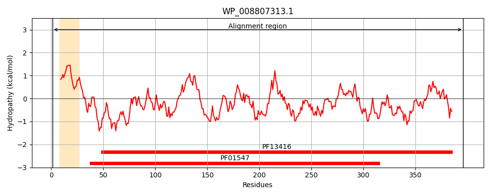
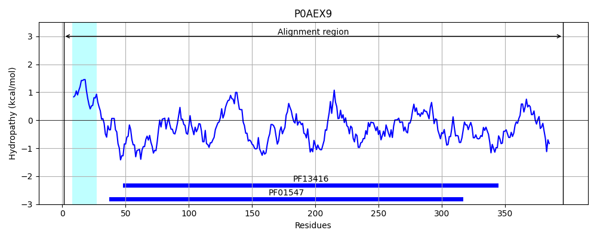
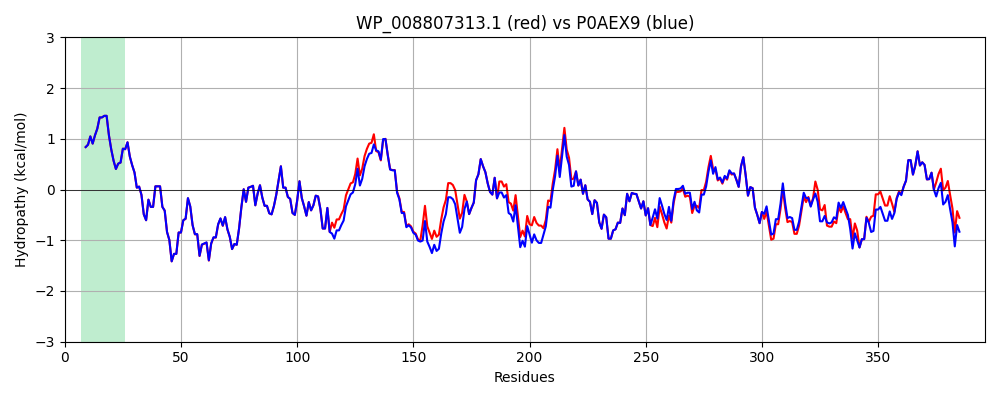

Hit Accession: P0AEX9
Hit TCID: 3.A.1.1.1
Hit Description: gnl|BL_ORD_ID|8799 gnl|TC-DB|P0AEX9|3.A.1.1.1 Maltose-binding periplasmic protein - Escherichia coli.
Mach Len: 396
e:0.000000
Query TMS Count : 1
Hit TMS Count: 1
TMS-Overlap Score: 1.000000
Predicted Substrates:CHEBI:17593;maltooligosaccharide, CHEBI:6668;maltose
BLAST Alignment:
Score: 1958 , Bit scores: 758 bits, E-value: 0.0e+00, Alignment length: 396, Percentage identity: 94
Query: 1 MKIKTGARILALSALTTMMFSASALAKIEEGKLVIWINGDKGYNGLAEVGKKFEKDTGIKVSVEHPDKLEEKFPQVAATGDGPDIIFWAHDRFGGYAQSGLLAEITPDKAFQDKLYPFTWDAVRFNGKLIAYPVAVEALSLIYNKDLVPNPPKTWEEIPALDKALKAKGKSALMFNLQEPYFTWPLIAADGGYAFKFENGKYDVKNVGVDSAGAKAGLTFLVDLIKNKHMNADTDYSIAEAAFNKGETAMTINGPWAWSNIDKSKVNYGVALLPTFKGKPSKPFVGVLSAGINAASPNKELAKEFLENYLMTDQGLEAVNNDKPLGAVALKSFQEKLEKDPRIAATMANAQNGEIMPNIPQMSAFWYAVRTAVINAASGRQTVDAALKDAQSRITK 396
MKIKTGARILALSALTTMMFSASALAKIEEGKLVIWINGDKGYNGLAEVGKKFEKDTGIKV+VEHPDKLEEKFPQVAATGDGPDIIFWAHDRFGGYAQSGLLAEITPDKAFQDKLYPFTWDAVR+NGKLIAYP+AVEALSLIYNKDL+PNPPKTWEEIPALDK LKAKGKSALMFNLQEPYFTWPLIAADGGYAFK+ENGKYD+K+VGVD+AGAKAGLTFLVDLIKNKHMNADTDYSIAEAAFNKGETAMTINGPWAWSNID SKVNYGV +LPTFKG+PSKPFVGVLSAGINAASPNKELAKEFLENYL+TD+GLEAVN DKPLGAVALKS++E+L KDPRIAATM NAQ GEIMPNIPQMSAFWYAVRTAVINAASGRQTVD ALKDAQ+RITK
Sbjct: 1 MKIKTGARILALSALTTMMFSASALAKIEEGKLVIWINGDKGYNGLAEVGKKFEKDTGIKVTVEHPDKLEEKFPQVAATGDGPDIIFWAHDRFGGYAQSGLLAEITPDKAFQDKLYPFTWDAVRYNGKLIAYPIAVEALSLIYNKDLLPNPPKTWEEIPALDKELKAKGKSALMFNLQEPYFTWPLIAADGGYAFKYENGKYDIKDVGVDNAGAKAGLTFLVDLIKNKHMNADTDYSIAEAAFNKGETAMTINGPWAWSNIDTSKVNYGVTVLPTFKGQPSKPFVGVLSAGINAASPNKELAKEFLENYLLTDEGLEAVNKDKPLGAVALKSYEEELAKDPRIAATMENAQKGEIMPNIPQMSAFWYAVRTAVINAASGRQTVDEALKDAQTRITK 396 | Protein Hydropathy Plots: |
|---|
|  |  |
Pairwise Alignment-Hydropathy Plot:
|
|---|
|  |